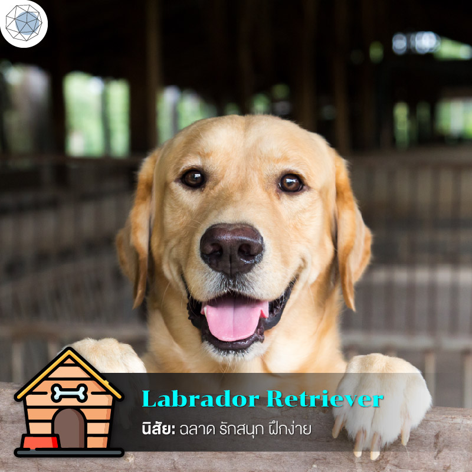
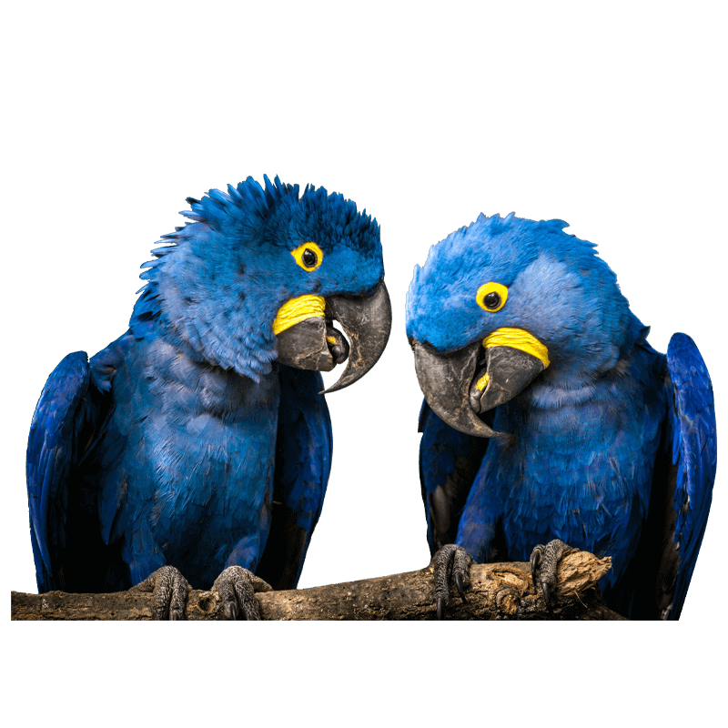
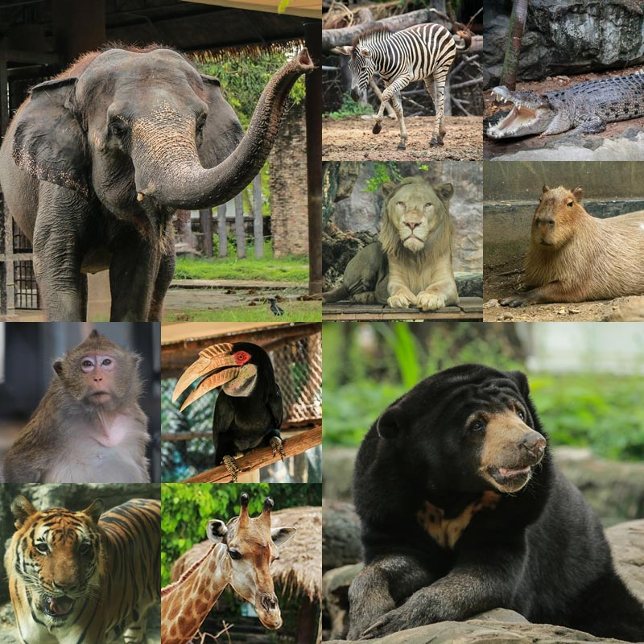
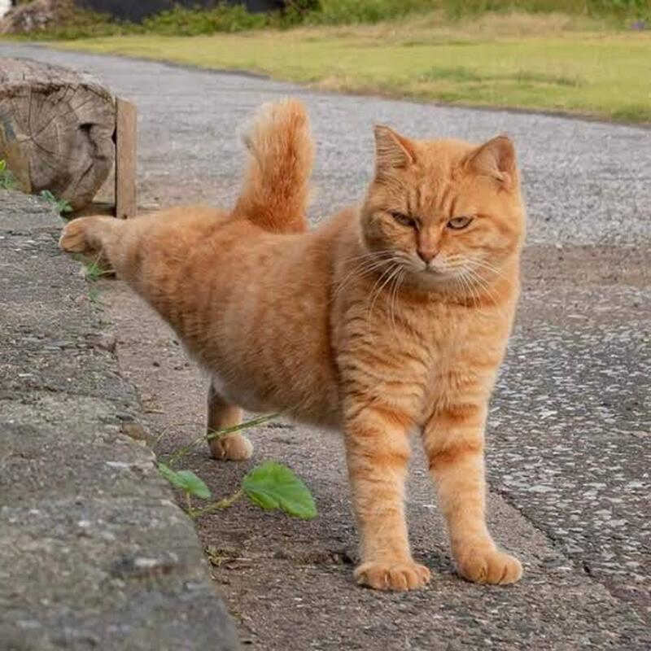
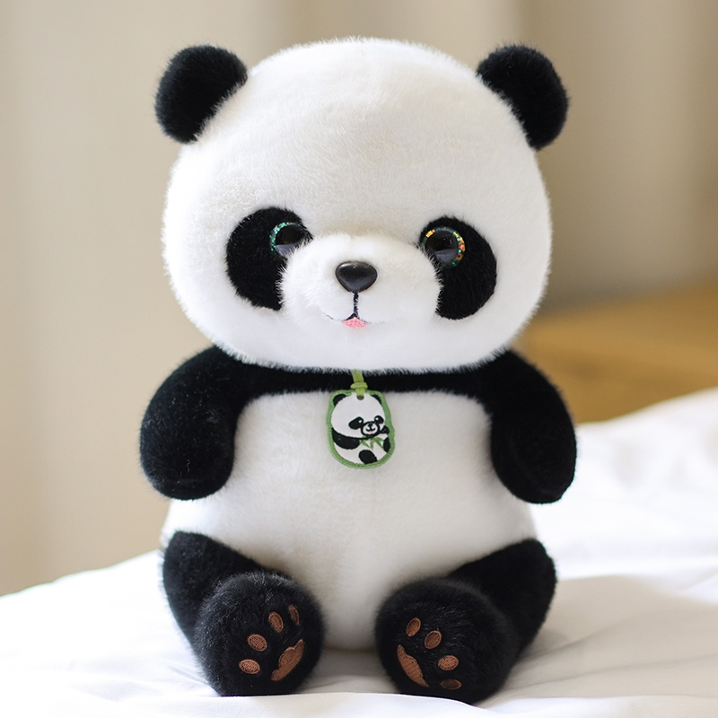
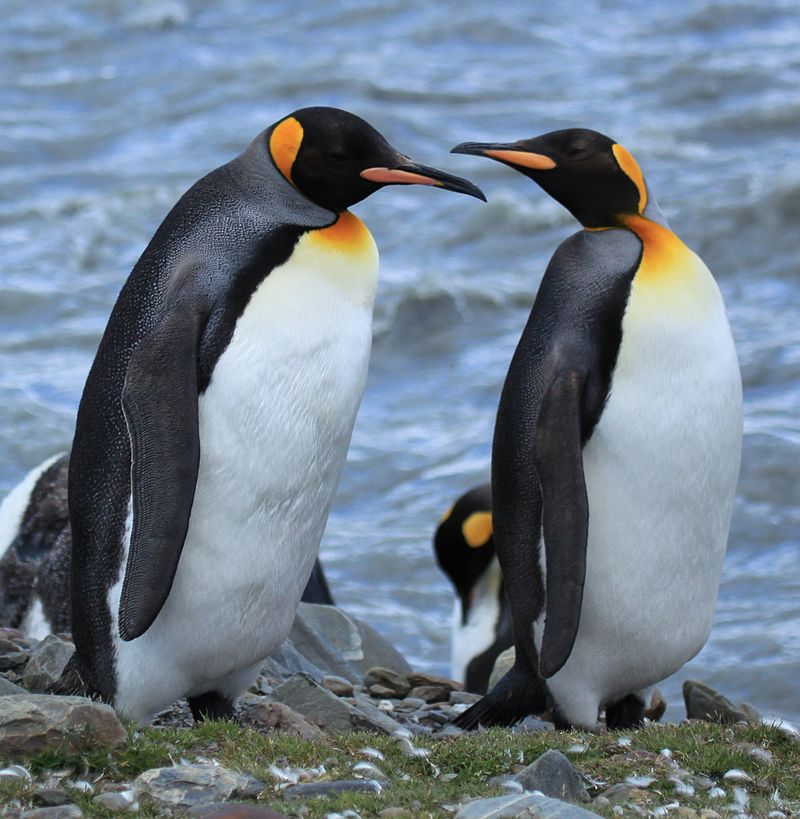
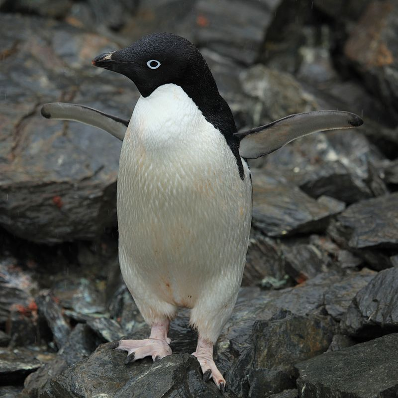

สุนัข
หมา หรือคำสุภาพว่า สุนัข เป็นสัตว์ที่สืบเชื้อสายมาจากหมาป่าที่ปรับตัวเป็นสัตว์เลี้ยงที่มักชูหางขึ้นสูง หมาสืบสายพันธุ์จากหมาป่าโบราณที่สูญพันธุ์แล้ว[6][7] และญาติใกล้ชิดกับหมาที่สุดที่ยังมีชีวิตอยู่คือหมาป่าสมัยใหม่[8] หมาเป็นสัตว์สปีชีส์แรกที่ถูกปรับเป็นสัตว์เลี้ยง
Go somewhereกระต่าย
กระต่ายเป็นสัตว์เลี้ยงลูกด้วยนมที่มีขนาดเล็ก มีขนปุกปุยทั่วลำตัว มีหางกลมสั้น มีใบหูยาวเมื่อเทียบกับสัตว์อื่น ซึ่งวิวัฒนาการมาใช้สำหรับฟังเสียงได้เป็นอย่างดี และยังมีประสาทสัมผัสในการดมกลิ่นที่ดีมาก กระต่ายมีขาหน้าที่มี 5 นิ้ว ขาหลังมี 4 นิ้ว
Go somewhere
นก
สัตว์ปีก หรือ นก จัดอยู่ในไฟลัมสัตว์มีแกนสันหลัง ชั้น Aves โดยมีลักษณะทั่วไปคือ เป็นสัตว์ทวิบาท เลือดอุ่น ออกลูกเป็นไข่ รยางค์คู่หน้าเปลี่ยนแปลงไปเป็นปีก มีขนนก และมีกระดูกที่กลวงเบา
Go somewhere
ภาพรวมสัตว์ต่างๆ
พบเห็นได้ที่สวนสัตว์ต่างๆ
1.ช้าง
2.เสือ
3.หมี 8.นก
4.ลิง 7.จระเข้
5.ยีราฟ 6.ม้าลาย

แมว
มว เป็นสปีชีส์สัตว์เลี้ยงของสัตว์เลี้ยงลูกด้วยนมกินเนื้อขนาดเล็ก โดยเป็นแมวสปีชีส์เดียวในวงศ์เสือและแมว ที่ถูกปรับเป็นสัตว์เลี้ยง และมักเรียกเป็น แมวบ้าน เพื่อแยกมันจากสมาชิกที่อยู่ในป่า แมวเหล่านี้สามารถอาศัยเป็นแมวบ้าน, แมวฟาร์ม
Go somewhere
หมีแพนด้า
แพนด้า เป็นสัตว์เลี้ยงลูกด้วยนมซึ่งปัจจุบันจัดอยู่ในวงศ์หมี ถิ่นอาศัยอยู่ในประเทศจีน ลักษณะเฉพาะของแพนด้ายักษ์คือมีขนสีดำรอบดวงตา, ใบหู, บ่า, และขาทั้งสี่ข้าง ส่วนอื่นประกอบด้วยขนสีขาว บางครั้งจะใช้ชื่อ "แพนด้ายักษ์"
Go somewhere
แพนกวิ้น
เพนกวิน เป็นนกที่อยู่ในวงศ์ อันดับ เพนกวินเกือบทุกชนิดพบได้เฉพาะที่ซีกโลกใต้ มีเพียงสายพันธุ์เดียวเท่านั้นคือ เพนกวินกาลาปาโกส ซึ่งพบได้ทางเหนือของเส้นศูนย์สูตร
Go somewhere
แพนกวิ้น
เพนกวิน เป็นนกที่อยู่ในวงศ์ อันดับ เพนกวินเกือบทุกชนิดพบได้เฉพาะที่ซีกโลกใต้ มีเพียงสายพันธุ์เดียวเท่านั้นคือ เพนกวินกาลาปาโกส ซึ่งพบได้ทางเหนือของเส้นศูนย์สูตร
Go somewhere.jpg)
ลิง
ลิง เป็นชื่อสามัญของสัตว์ในไฟลัมสัตว์มีแกนสันหลัง ชั้นสัตว์เลี้ยงลูกด้วยนม จัดอยู่ในอันดับวานร ลักษณะท่าทางคล้ายมนุษย์ ซึ่งจัดอยู่ในอันดับเดียวกัน เนื่องจากมีบรรพบุรุษร่วมกันมา
Go somewhere